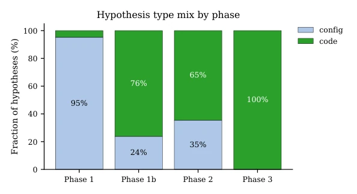
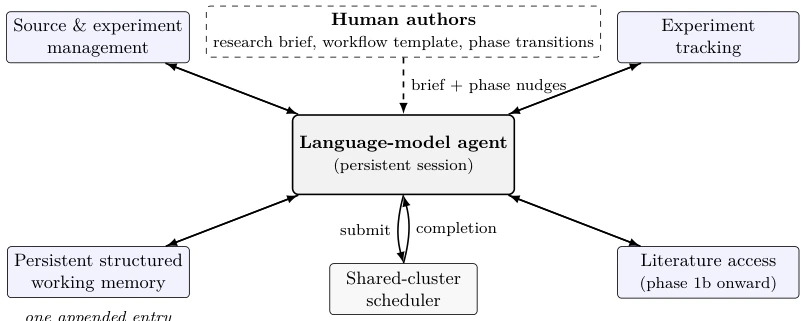
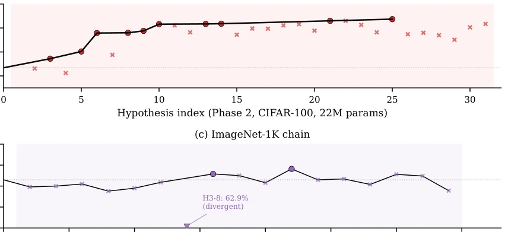
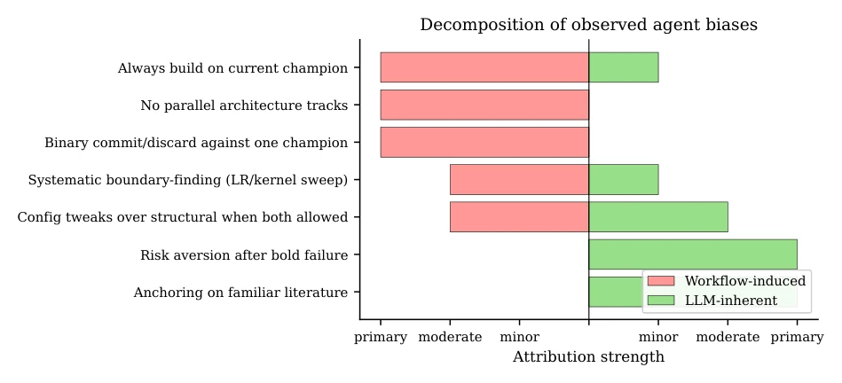
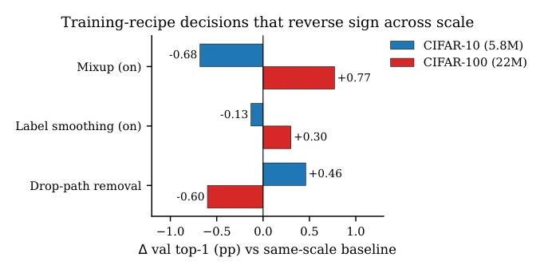

This paper places the LLM in the lab as a 'lone researcher', attempting to enable it to independently complete neural architecture search lasting several weeks. The highlight lies in its successful execution of a long-cycle closed loop, not only producing architectures but also leaving detailed behavior logs. However, to be somewhat critical, this resembles testing 'workflow design' rather than 'model intelligence'. The Agent's performance heavily relies on human-defined 'commit-or-discard' rules, causing it to behave like an algorithm that only climbs mountains, getting stuck upon saturation until humans provide new tools to recover. 80% of the gain stems from the first hypothesis, with the remainder consisting of trivial details; does this constitute true 'autonomous research', or merely efficient execution by the LLM on a predetermined track? The conclusion is candid: workflow is more critical than model capability, and may even constrain the Agent's exploration ceiling.
研究动机Motivation
现有自动化机器学习研究多局限于固定搜索空间（如贝叶斯优化、进化算法）或短周期的 LLM 任务（如 SWE-bench 级别的 bug 修复）。虽然 FunSearch 和 AI Scientist 等尝试了 LLM 参与科研，但大多关注短周期或代码生成，缺乏对长周期、开放-ended 架构探索中行为模式的研究。本文旨在填补这一空白，探究单一通用 LLM 在长周期（数百 GPU 小时）架构设计中的真实表现，特别是工作流如何塑造其探索行为。现有系统往往假设 LLM 能自主规划，但本文指出长周期下的饱和、锚定效应等关键现象在短基准中不可见，需要更细致的行为分析来指导未来系统的设计 (Lu et al., 2024; Jimenez et al., 2024)。此外，传统 NAS 方法无法捕捉开放提议中的行为失败模式，如风险规避和成功追逐。
Existing automated machine learning research is mostly limited to fixed search spaces (e.g., Bayesian optimization, evolutionary algorithms) or short-cycle LLM tasks (e.g., SWE-bench level bug fixing). Although attempts like FunSearch and AI Scientist have tried LLM participation in research, most focus on short cycles or code generation, lacking research on behavior patterns in long-cycle, open-ended architecture exploration. This paper aims to fill this gap, investigating the true performance of a single general-purpose LLM in long-cycle (hundreds of GPU hours) architecture design, specifically how workflow shapes its exploration behavior. Existing systems often assume LLMs can plan autonomously, but this paper points out that key phenomena such as saturation and anchoring effects under long cycles are invisible in short benchmarks, requiring more detailed behavioral analysis to guide future system design (Lu et al., 2024; Jimenez et al., 2024). Additionally, traditional NAS methods cannot capture behavior failure modes in open proposals, such as risk aversion and success chasing.

Figure 5: Fraction of hypotheses whose only substantive change is a configuration toggle (light) vs a code- level architectural change (dark), per phase. The Phase 1b transition, which granted literature access and authorised code editing, shifts the agent’s action from predominantly configuration to predominantly code.
Overall adopts a single Agent persistent session architecture, supporting the closed loop through four research affordances: source code and experiment management, experiment tracking, literature access, persistent structural memory. Core flow is 'Propose hypothesis -> Modify code/config -> Submit experiment -> Evaluate results -> Commit or Discard'. Agent executes only one experiment at a time, exits after submission, waiting for the task completion signal to return. Humans are only responsible for initial briefing, stage transition intervention (e.g., enabling literature access, switching datasets) and reliability fixes, tactical decisions are fully handed over to the Agent. Workflow forces adoption of 'greedy hill climbing' strategy: only keep modifications if new results are better than current champion, otherwise rollback. Although this design simplifies causal signals, it also leads the Agent to tend towards incremental improvement. Three stages correspond to different dataset scales (CIFAR-10 -> CIFAR-100 -> ImageNet-1K) and tool permissions (later open literature access), breaking Agent's exploration saturation through human intervention. Agent needs to read logs and cite literature, ensuring hypotheses are traceable.

Figure 1: The autonomous research loop. A single persistent language-model agent is granted four research affordances (source/experiment management, experiment tracking, persistent structured working memory, and, from the second phase onward, literature access) and submits one experiment at a time to a shared-cluster scheduler. Human authorship is confined to the research brief, the workflow template, and a small number of phase-transition interventions; all tactical decisions (hypothesis selection, code changes, result interpretation, commit-or-discard) are taken by the agent.
Experiments target pure channel attention Vision Transformer architecture design, conducted on CIFAR-10, CIFAR-100, and ImageNet-1K. Agent executes approximately 100 univariate hypotheses, total time approximately 10 weeks, consuming 2400 GPU hours. Main results: CIFAR-10 accuracy improved from 69.67% to 96.59%, ImageNet-1K reached 77.91%. Key findings include: (1) Productivity shows a three-stage structure (fast gain, saturation, recovery), saturation period requires human expansion of tool surface to break; (2) First hypothesis contributed approximately 80% of CIFAR-10 gain, subsequent are long tail; (3) Agent exhibits strong greedy and incremental preference, mainly originating from workflow rules rather than the model itself; (4) Under the pure channel attention new regime, Agent independently overturned standard design choices (e.g., single-head better than multi-head). Additionally, training strategies such as Mixup and Drop-path show reversed performance across different scales, highlighting the importance of cross-scale validation.

Figure 2: Accuracy trajectory across the programme, broken out by dataset chain. (a) CIFAR-10 at 5.8M parameters, spanning Phase 1 and Phase 1b; (b) CIFAR-100 at 22M parameters, Phase 2; (c) ImageNet-1K at 22M parameters, Phase 3 (closed at H3-18). Circles mark accepted hypotheses (source-controlled as new champion); crosses mark rejected hypotheses (experimental change reverted). The solid black line is the running champion. Regime annotations on (a) highlight the early rapid-gain sub-regime, the short exploitation sub-regime, and the long configuration-saturation plateau that motivated Phase 1b. Panel (c) shows a +0.26 pp aggregate gain over eighteen hypotheses with only two accepted, dominated by a single late acceptance (H3-12) and surrounded by a long sequence of stage-3 modifications

Figure 7: Diverging-bar decomposition of the observed behavioural biases. Red bars to the left represent the component attributable to the workflow we imposed (which is structurally a greedy hill-climb); green bars to the right represent the residual component attributable to the agent’s own tendencies. Every bias with a workflow-induced component is directly addressable by a workflow change; the residual component is smaller but harder to modify.
其他图片Other Figures

Figure 6: Training-recipe decisions that reverse sign across scale. Positive bars indicate that turning the setting on helps at that scale; negative bars indicate that turning it off helps. Decisions that were beneficial on CIFAR-10 at 5.8M parameters become harmful on CIFAR-100 at 22M parameters, and vice versa.